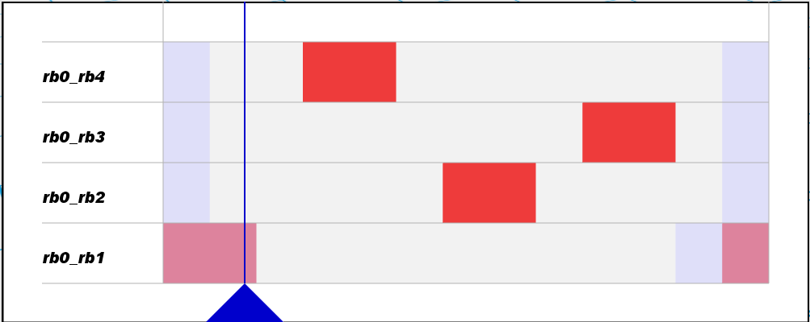

Transitions
F: (State4)->State1->State2->State3->State4->State1->(State2)
G: (State4)->State1->State3->State2->State4->State1->(State2)
H: (State4)->State1->State4->State2->State3->State1->(State2)

L: (State2)->State3->State4->State1->State2->State1->(State2)
M: (State2)->State3->State2->State1->State4->State1->(State2)
N: (State2)->State3->State1->State2->State4->State1->(State2)
J: (State4)->State1->State3->State2->State4->State1->(State2)
Q: (State4)->State1->State3->State2->State4->State1->(State2)